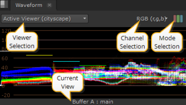
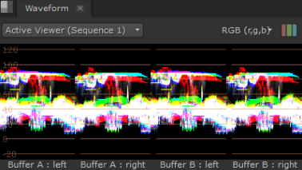
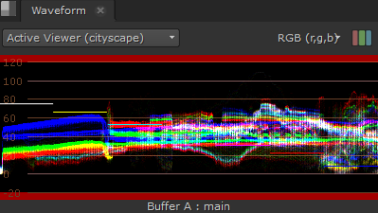

内容菜单 窗户 > 新范围 > 波形 Scope 提供关于亮度或亮度的信息，您可以使用这些信息来决定镜头是曝光过度还是曝光不足。该信息表示从 0 到 100% 的亮度值 (黑色通过光谱到白色)。波形越高，查看器中的图像就越亮。

提示: 您可以通过按住来平移视图区域 Alt ,或鼠标中键，并在面板中拖动。
上面的白色标记用于测量何时过度暴露可能是一个问题。如果您的波形在白色标记上有很多轨迹，您可以考虑降低图像的亮度。较低的黑色标记的情况正好相反。
也有 观众 和 渠道 上的选择控件 波形 标签:
• 观众选择 -如果打开了多个查看器，请使用下拉菜单将波形输出与所需的查看器相关联。
默认值, 活动查看器 ,自动显示您选择的最后一个查看器的详细信息。
• 通道选择 -选择要输出的通道。默认设置显示 RGB，但也可以单独查看通道。
• 模式选择 -选择要输出的模式。默认设置显示混合 RGB，但您也可以通过检查来单独查看通道 游行 .
• 当前视图 -描述当前显示在范围中的视图，无论是 A 或 B 缓冲区还是视图。视图默认为 主要 ,除非 主要 已在多视图脚本或项目中被替换。
根据您激活的查看器工具和视图，您可以同时显示最多四个范围。
例如，有两个立体声读取节点，每个输入缓冲区中有一个, 擦拭 和 浮雕 活动时，范围显示如下所示:

示波器具有全球可定制指南，可帮助您查看数据。导航到 偏好 > 面板 > 范围 和输入值之间 0 和 1 对于 Blackpoint 和 白点 .
波形顶部和底部的参考线变为红色，当分布超出范围时发出警告:

|
|